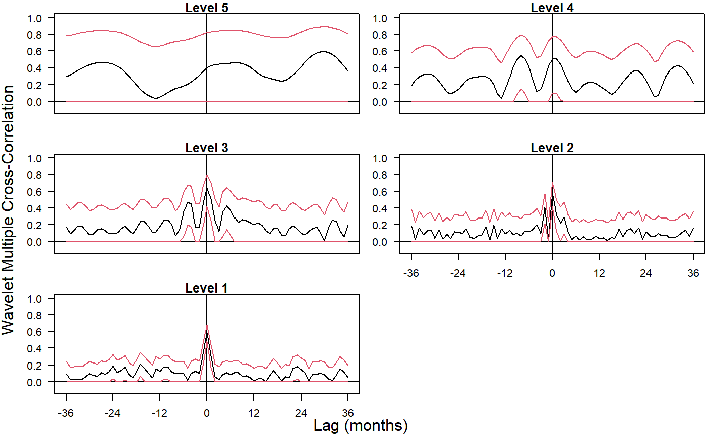

wave.multiple.cross.correlation.RdProduces an estimate of the multiscale multiple cross-correlation (as defined below).
wave.multiple.cross.correlation(xx, lag.max=NULL, p=.975, ymaxr=NULL)
| xx | A list of \(n\) (multiscaled) time series, usually the outcomes of dwt or modwt, i.e. xx <- list(v1.modwt.bw, v2.modwt.bw, v3.modwt.bw) |
|---|---|
| lag.max | maximum lag (and lead). If not set, it defaults to half the square root of the length of the original series. |
| p | one minus the two-sided p-value for the confidence interval, i.e. the cdf value. |
| ymaxr | index number of the variable whose correlation is calculated against a linear combination of the rest, otherwise at each wavelet level wmc chooses the one maximizing the multiple correlation. |
The routine calculates one single set of wavelet multiple cross-correlations out of \(n\) variables that can be plotted as one single set of graphs (one per wavelet level), as an alternative to trying to make sense out of \(n(n-1)/2 . J\) sets of wavelet cross-correlations. The code is based on the calculation, at each wavelet scale, of the square root of the coefficient of determination in a linear combination of variables that includes a lagged variable for which such coefficient of determination is a maximum.
List of two elements:
xy.mulcor: numeric matrix with as many rows as levels in the wavelet transform object. The columns provide the point estimates for the wavelet multiple cross-correlations at different lags (and leads). The central column (lag=0) replicates the wavelet multiple correlations. Columns to the right (lag>0) give wavelet multiple cross-correlations with positive lag, i.e. with y=var[Pimax] lagging behind a linear combination of the rest: x[t]hat --> y[t+j]. Columns to the left (lag<0) give wavelet multiple cross-correlations with negative lag, i.e. with y=var[Pimax] leading a linear combination of the rest: y[t-j] --> x[t]hat.
ci.mulcor: list of two elements:
lower: numeric matrix of the same dimensions as xy.mulcor giving the lower bounds of the corresponding \(100(1-2(1-p))\%\) confidence interval.
upper: idem for the upper bounds.
YmaxR: numeric vector giving, at each wavelet level, the index number of the variable whose correlation is calculated against a linear combination of the rest. By default, wmcc chooses at each wavelet level the variable maximizing the multiple correlation.
Fernández-Macho, J., 2012. Wavelet multiple correlation and cross-correlation: A multiscale analysis of Eurozone stock markets. Physica A: Statistical Mechanics and its Applications 391, 1097--1104. <DOI:10.1016/j.physa.2011.11.002>
Needs waveslim package to calculate dwt or modwt coefficients as inputs to the routine (also for data in the example).
## Based on data from Figure 7.9 in Gencay, Selcuk and Whitcher (2001) ## plus one random series. library(wavemulcor) data(exchange) returns <- diff(log(exchange)) returns <- ts(returns, start=1970, freq=12) N <- dim(returns)[1] wf <- "d4" J <- trunc(log2(N))-3 lmax <- 36 n <- dim(returns)[1] demusd.modwt <- modwt(returns[,"DEM.USD"], wf, J) demusd.modwt.bw <- brick.wall(demusd.modwt, wf) jpyusd.modwt <- modwt(returns[,"JPY.USD"], wf, J) jpyusd.modwt.bw <- brick.wall(jpyusd.modwt, wf) rand.modwt <- modwt(rnorm(length(returns[,"DEM.USD"])), wf, J) rand.modwt.bw <- brick.wall(rand.modwt, wf) ##xx <- list(demusd.modwt.bw, jpyusd.modwt.bw) xx <- list(demusd.modwt.bw, jpyusd.modwt.bw, rand.modwt.bw) Lst <- wave.multiple.cross.correlation(xx, lmax) returns.cross.cor <- Lst$xy.mulcor[1:J,] returns.lower.ci <- Lst$ci.mulcor$lower[1:J,] returns.upper.ci <- Lst$ci.mulcor$upper[1:J,] YmaxR <- Lst$YmaxR # --------------------------- ##Producing correlation plot rownames(returns.cross.cor) <- rownames(returns.cross.cor, do.NULL = FALSE, prefix = "Level ") par(mfrow=c(3,2), las=1, pty="m", mar=c(2,3,1,0)+.1, oma=c(1.2,1.2,0,0)) ymin <- -0.1 if (length(xx)<3) ymin <- -1 for(i in J:1) { matplot((1:(2*lmax+1)),returns.cross.cor[i,], type="l", lty=1, ylim=c(ymin,1), xaxt="n", xlab="", ylab="", main=rownames(returns.cross.cor)[[i]][1]) if(i<3) {axis(side=1, at=seq(1, 2*lmax+1, by=12), labels=seq(-lmax, lmax, by=12))} #axis(side=2, at=c(-.2, 0, .5, 1)) abline(h=0,v=lmax+1) ##Add Straight horiz and vert Lines to a Plot lines(returns.lower.ci[i,], lty=1, col=2) ##Add Connected Line Segments to a Plot lines(returns.upper.ci[i,], lty=1, col=2) text(1,1, labels=names(xx)[YmaxR[i]], adj=0.25, cex=.8) } par(las=0) mtext('Lag (months)', side=1, outer=TRUE, adj=0.5) mtext('Wavelet Multiple Cross-Correlation', side=2, outer=TRUE, adj=0.5)